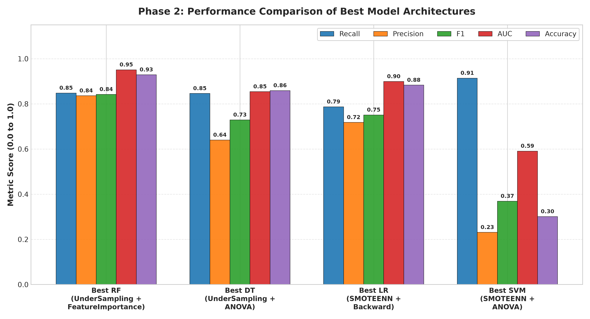
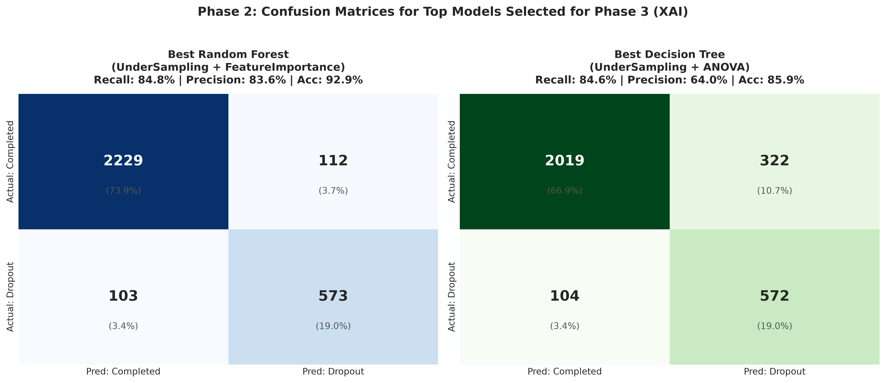
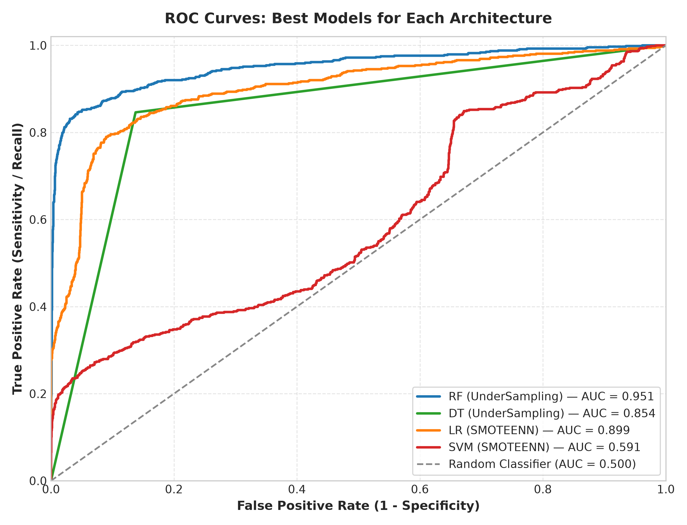
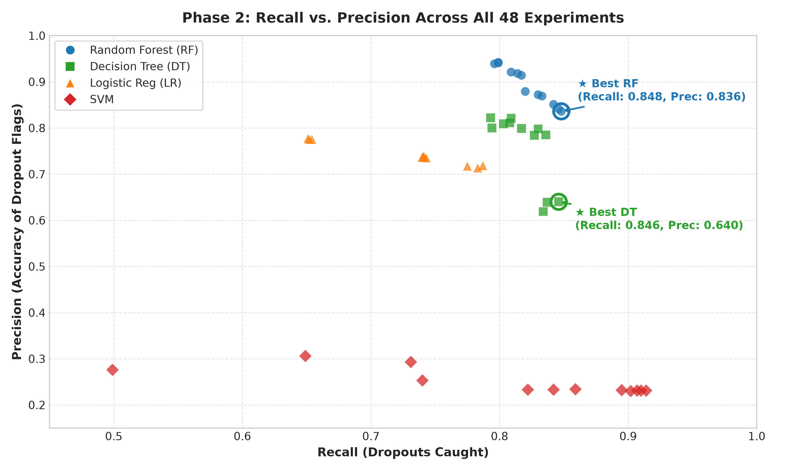
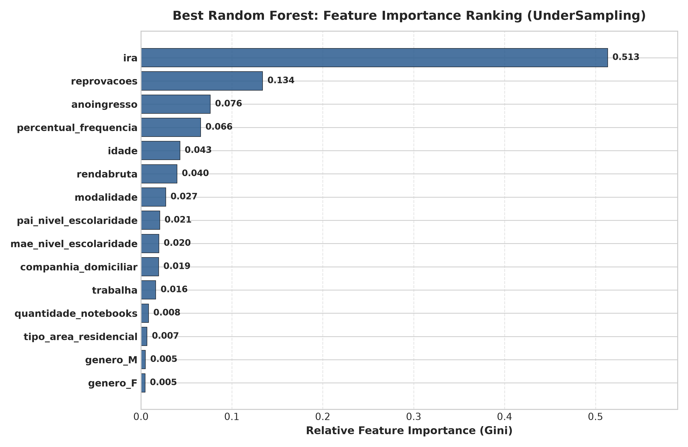

Empirical evaluation of 48 combinations across 4 class balancing strategies, 3 feature selection methods, and 4 machine learning models for early student dropout intervention.
| Rank | Model | Balancing Strategy | Feature Selection | Recall | Precision | F1-Score | AUC-ROC | Accuracy | 10-CV Recall |
|---|---|---|---|---|---|---|---|---|---|
| #1 | SVM | SMOTEENN | ANOVA | 0.914 | 0.231 | 0.369 | 0.591 | 30.1% | 0.873 |
| #2 | SVM | UnderSampling | Backward | 0.910 | 0.231 | 0.369 | 0.759 | 30.3% | 0.695 |
| #3 | SVM | UnderSampling | ANOVA | 0.907 | 0.231 | 0.368 | 0.727 | 30.3% | 0.801 |
| #4 | SVM | Unbalanced | ANOVA | 0.902 | 0.230 | 0.367 | 0.689 | 30.3% | 0.867 |
| #5 | SVM | SMOTEENN | FeatureImportance | 0.895 | 0.232 | 0.369 | 0.720 | 31.4% | 0.863 |
| #6 | SVM | Unbalanced | Backward | 0.859 | 0.234 | 0.367 | 0.686 | 33.7% | 0.849 |
| #7 | RF | UnderSampling | FeatureImportance | 0.848 | 0.836 | 0.842 | 0.951 | 92.9% | 0.878 |
| #8 | RF | UnderSampling | ANOVA | 0.846 | 0.841 | 0.844 | 0.950 | 93.0% | 0.877 |
| #9 | DT | UnderSampling | ANOVA | 0.846 | 0.640 | 0.729 | 0.854 | 85.9% | 0.879 |
| #10 | RF | UnderSampling | Backward | 0.842 | 0.851 | 0.846 | 0.953 | 93.1% | 0.874 |
| #11 | SVM | OverSampling (SMOTE) | FeatureImportance | 0.842 | 0.233 | 0.365 | 0.627 | 34.3% | 0.708 |
| #12 | DT | UnderSampling | Backward | 0.837 | 0.639 | 0.725 | 0.850 | 85.7% | 0.879 |
| #13 | DT | SMOTEENN | Backward | 0.836 | 0.785 | 0.809 | 0.885 | 91.2% | 0.965 |
| #14 | DT | UnderSampling | FeatureImportance | 0.834 | 0.619 | 0.711 | 0.843 | 84.8% | 0.874 |
| #15 | RF | SMOTEENN | ANOVA | 0.833 | 0.869 | 0.850 | 0.946 | 93.4% | 0.978 |

Comparison of Best Architectures (RF vs DT vs LR vs SVM)

Test Set Confusion Matrices for Models Selected for Phase 3

ROC Discrimination Curves Across Architectures

Recall vs. Precision Trade-off Across All 48 Experiments

Gini Feature Importance for Champion Random Forest Model